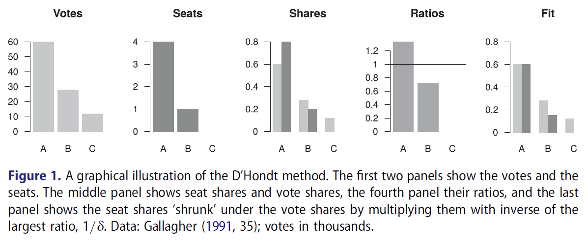
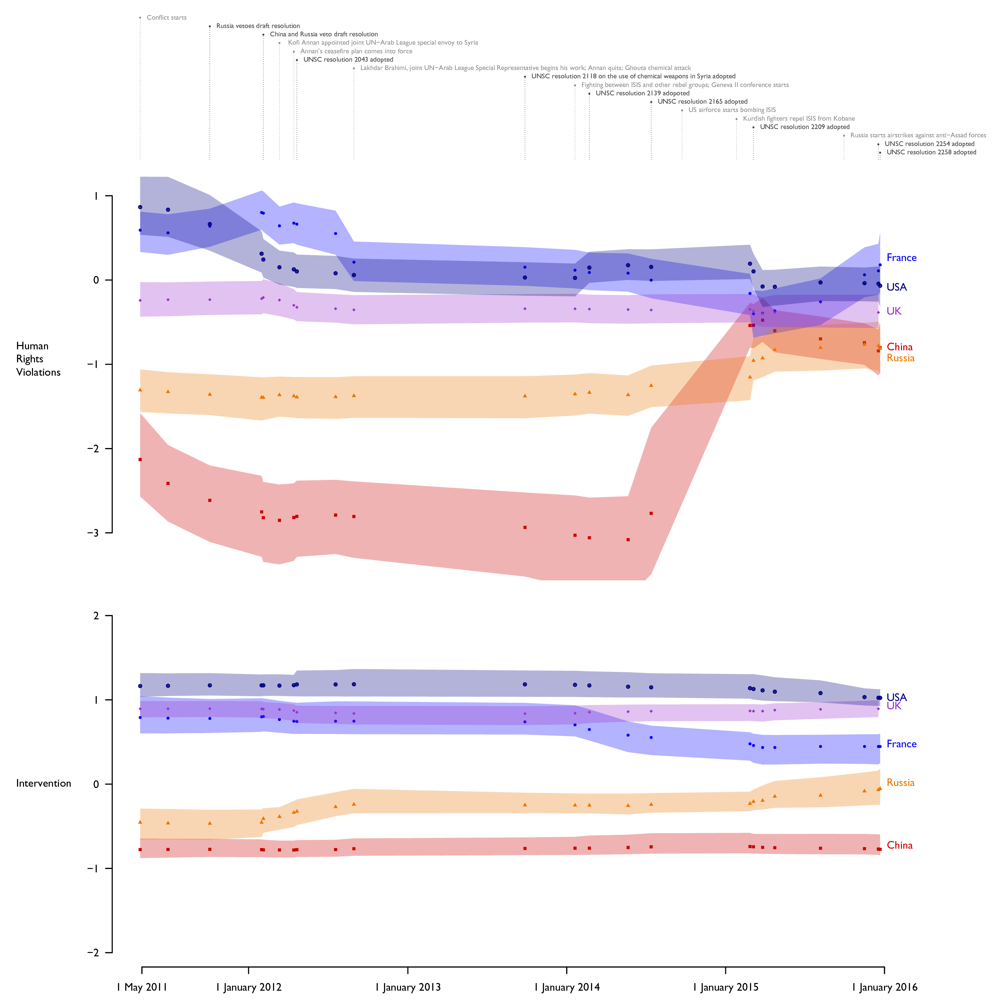
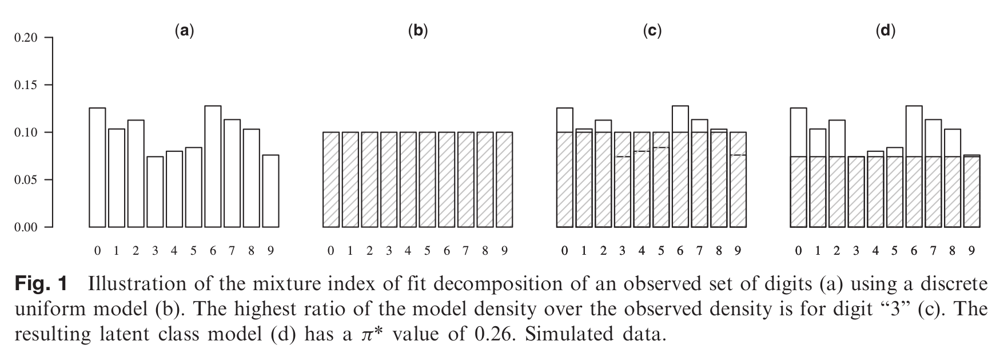
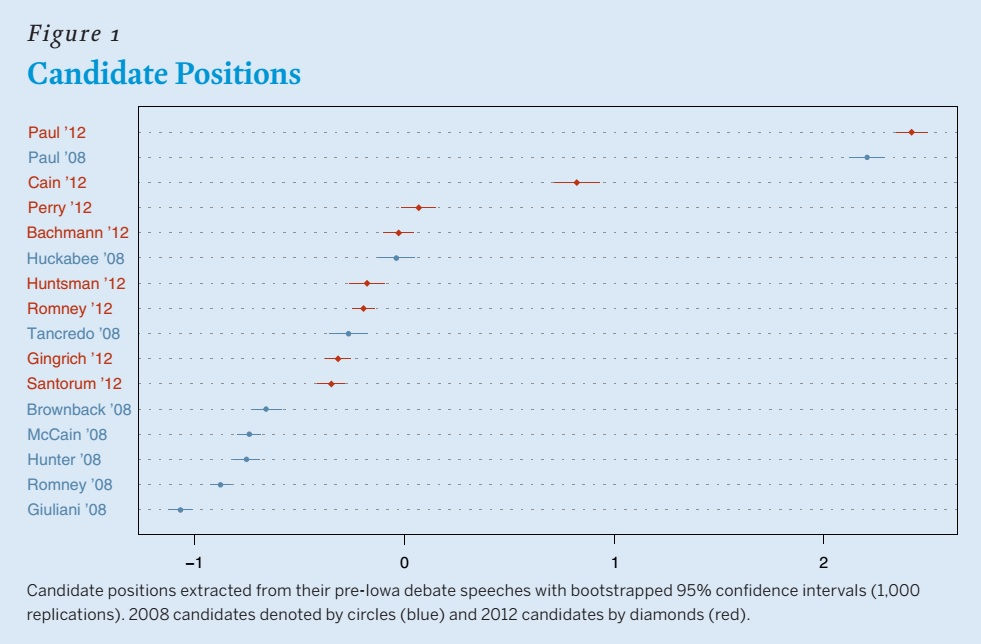

Rethinking the D'Hondt Method
Political Research Exchange 1(1)

The D’Hondt method is the most popular proportional apportionment procedure, as well as one of the oldest. Despite this, the method is not fully understood, with serious normative and empirical implications for democratic representation. This paper provides insights into the D’Hondt method through a generalization that is based on a finite mixture model, extends to situations with missing data (e.g. imperfect records), and applies to allocation problems outside of elections. The generalization disproves several widely accepted beliefs, clarifying that the method maximizes the fraction of exactly proportionally represented votes, and providing intuitive measures of overall and party-level disproportionality. The crucial insights of this interpretation are easily communicated in natural language without any mathematical formalisms, which makes it particularly useful for lay audiences and civic education. I illustrate these features with the 1999–2014 British European Parliament elections.
···
Model-Based Analysis of Incomplete Data
In Advances in Latent Class Analysis: A Festschrift in Honor of C. Mitchell Dayton
Hancock, G. R. & Macready, G. B. (eds.). Charlotte, NC: IAP.
third author, with
Tamás Rudas and
Emese Verdes
The mixture index of fit may be used to measure model fit in the presence of unit nonresponse by assuming the equality of two mixture representations of the true distribution of the population. One represents the observational process as a mixture of the distributions in the observable (actual data) and unobservable (missing data) parts of the population, and the other one represents the model assumption as a mixture of a distribution from the model (fit) and of an unspecified (no fit) component. In this framework, model fit may be measured by minimizing the no-fit fraction conditioned on an assumed or observed fraction of those unobserved. The paper generalizes this framework to item nonresponse by introducing additional components in the representation of the observational process for the various observed data patterns. This approach provides the researcher with a tool to diagnose the fit of statistical models using incomplete observations, without making untestable assumptions, like data being missing at random.
···
Rhetoric of Civil Conflict Management: United Nations Security Council Debates over the Syrian Civil War
Research & Politics 4(2)
with
Milos Popovic and
Erin K. Jenne

This paper introduces a spatial model of civil conflict management rhetoric to explore how the emerging norm of responsibility to protect shapes major power rhetorical responses to civil war. Using framing theory, we argue that responsibility to protect functions like a prescriptive norm, such that representing a conflict as one of (1) human rights violations (problem definition), implies rhetorical support for (2) coercive outside intervention (solution identification). These dimensions reflect the problem-solution form of a prescriptive norm. Using dictionary scaling with a dynamic model, we analyze the positions of UN Security Council members in debates over the Syrian Civil War separately for each dimension. We find that the permanent members who emphasized human rights violations also used intervention rhetoric (UK, France, and the US), and those who did not used non-intervention rhetoric (Russia and China). We conclude that, while not a fully consolidated norm, responsibility to protect appears to have structured major power rhetorical responses to the Syrian Civil War.
···
Election Fraud: A Latent Class Framework for Digit-Based Tests
Political Analysis 23(4)

Digit-based election forensics (DBEF) typically relies on null hypothesis significance testing, with undesirable effects on substantive conclusions. This article proposes an alternative free of this problem. It rests on decomposing the observed numeral distribution into the “no fraud” and “fraud” latent classes, by finding the smallest fraction of numerals that needs to be either removed or reallocated to achieve a perfect fit of the “no fraud” model. The size of this fraction can be interpreted as a measure of fraudulence. Both alternatives are special cases of measures of model fit—the π* mixture index of fit and the Δ dissimilarity index, respectively. Furthermore, independently of the latent class framework, the distributional assumptions of DBEF can be relaxed in some contexts. Independently or jointly, the latent class framework and the relaxed distributional assumptions allow us to dissect the observed distributions using models more flexible than those of existing DBEF. Reanalysis of Beber and Scacco's (2012) data shows that the approach can lead to new substantive conclusions.
···
Has the Tea Party Era Radicalized the Republican Party? Evidence from Text Analysis of the 2008 and 2012 Republican Primary Debates
PS: Political Science & Politics 47(4)
with
Levente Littvay and
Erin K. Jenne

Much ink has been spilled to describe the emergence and likely influence of the Tea Party on the American political landscape. Pundits and journalists declared that the emergence of the Tea Party movement pushed the Republican Party to a more extreme ideological position, which is generally anti-Washington. To test this hypothesis, we analyzed the ideological positions taken by candidates in the 2008 and 2012 pre-Iowa caucus Republican presidential-primary debates. To establish the positions, we used the debate transcripts and a text-analytic technique that placed the candidates on a single dimension. Findings show that, overall, the 2012 candidates moved closer to an anti-Washington ideology—associated with the Tea Party movement—and away from the more traditional social conservative Republican ideology, which was more salient in the 2008 debates. Both Mitt Romney and Ron Paul, the two candidates who ran in both elections, shifted significantly in the ideological direction associated with the Tea Party.
The Methodology of “Varieties of Democracy” (V-Dem)
Bulletin de Méthodologie Sociologique 143(1) (invited)
contributing author, with M. Coppedge et al.
This article describes and discusses the new generation of methodological responses to measuring democracy and related issues generated by Varieties of Democracy (V-Dem). V-Dem is distinct in several regards in addition to its unique level of disaggregation, by the combination of: historical data extending back to 1900 and for a selection to 1789 for most countries in the world; use of multiple, independent coders for each evaluative question; inter-coder reliability tests incorporated into a custom designed Bayesian item-response theory measurement model; provision of confidence bounds for all point estimates associated with expert-coded questions as well as for all indices; multiple indices reflecting varying theories of democracy; fully transparent aggregation procedures; and that all data freely available, including original coder-level judgments (exclusive of any personal identifying information).
···
Charm Offensive or Offensive Charm? Russian and Chinese Cultural Institutes Abroad
Accepted at Europe-Asia Studies
second author, with Milos Popovic and Erin K. Jenne
TBC
Successful and Failed Episodes of Democratization: Conceptualization, Identification, and Description
V-Dem Working Paper 79
contributing author, with Staffan I. Lindberg et al.
What explains successful democratization? Answering this requires that researchersidentify not only countries that successfully transitioned to democracy, but also those thatbegan to liberalize—that initiated institutional reforms that move it towards democracy—but failed to transition. In this paper, we propose a solution that allows researchers morefully to capture the liberalization period and then classify these episodic events accordingto their outcome: successful, failed, or censored episodes of democratization. We identifythe appropriate procedures and data necessary for operationalization of such episodes andpresent the first ever dataset of the full universe of democratization episodes 1900-2017,compare them to existing measures and assess construct validity. We also demonstratethe value of this approach showing how we can substantially improve upon what weknow about democratization, including their relationship to development, state capacity,underlying temporal features, and the relationship between patterns of liberalization andwhether a country successfully transitions to democracy.
···
The V–Dem Measurement Model: Latent Variable Analysis for Cross-National and Cross-Temporal Expert-Coded Data
V-Dem Working Paper 21-4
contributing author, with Daniel Pemstein et al.
The Varieties of Democracy (V–Dem) project relies on country experts who code ahost of ordinal variables, providing subjective ratings of latent—that is, not directlyobservable—regime characteristics over time. Sets of around five experts rate each case(country-year observation), and each of these raters works independently. Since ratersmay diverge in their coding because of either differences of opinion or mistakes, we requiresystematic tools with which to model these patterns of disagreement. These tools allow usto aggregate ratings into point estimates of latent concepts and quantify our uncertaintyaround these point estimates. In this paper we describe item response theory modelsthat can that account and adjust for differential item functioning (i.e. differences in howexperts apply ordinal scales to cases) and variation in rater reliability (i.e. random error).We also discuss key challenges specific to applying item response theory to expert-codedcross-national panel data, explain the approaches that we use to address these challenges,highlight potential problems with our current framework, and describe long-term plansfor improving our models and estimates. Finally, we provide an overview of the differentforms in which we present model output.
···
International Banking Standards in Emerging Markets: Testing the Adaptation Thesis in the European Union
IES Working Papers 6/2012 (peer reviewed)
second author, with
Zdenek Kudrna
This paper compares the bank regulatory regimes in the enlarged European Union in order to test the thesis claiming that international banking standards need to be adapted to emerging market circumstances. On the basis of World Bank surveys, we compile structural indices for the 10 post-communist EU members (emerging markets) as well as 17 advanced EU economies and compare them using Bayesian statistical procedures. Our findings show that there were systematic and significant differences, two-thirds of which can be explained by 8 of the 52 structural characteristics. The new member states regulatory regimes are more rule-based and leave less discretion for authorities, which is consistent with the thesis that the emerging market regulatory regimes — including those within the EU — needed to compensate for limited regulatory resources and higher political and economic volatility. Hence, the new generation of international banking standards should recognize these limitations.